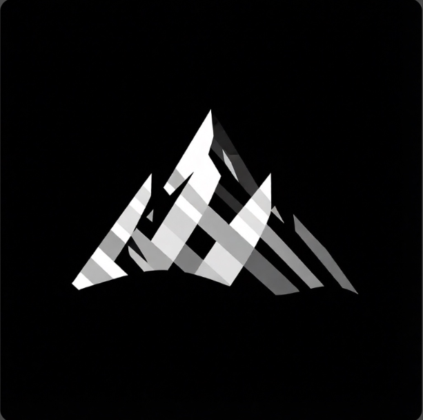

KHS методПривычная структура не враг, но она — твой потолок, если ты не готов её менять. KHS не разрушает ради хаоса — он заменяет то, что держит тебя в покое, на то, что ведёт в движение.
Читалка книг и документов. Запускается прямо из хаба KHS отдельной плиткой.
KHS — это метод пересборки себя.
Привычная структура не враг, но она — твой потолок, если ты не готов её менять. KHS предлагает не разрушать ради хаоса, а заменять то, что держит тебя в покое, на то, что ведёт в движение.
В основе — действие. Нет молитв, нет ритуалов. Есть выбор.
Каждый день ты либо укрепляешь старую рутину, либо строишь новую. KHS не говорит, что правильно. Он говорит: выбери и делай.
Цель — не «стать лучше». Цель — создать систему, в которой ты действуешь без борьбы. Когда привычка становится не обязанностью, а естественным состоянием.
KHS не имеет конца. Ты не заканчиваешь. Ты продолжаешь. И всё завязано на дисциплине.
Утром открываешь день и решаешь, что действительно важно. Приоритеты высокие, средние, низкие — решение каждый день, а не один раз на всю жизнь.
Задача появляется одной фразой: дата, время и приоритет распознаются сами. Остаётся только нажать — и не дать списку разрастись.
Вечером отмечаешь сделанное, пишешь заметку дня и видишь ритм на календаре. Завтрашний день собран из сегодняшнего.
Высокие / средние / низкие, фильтры, ежедневное планирование — выбор каждый день.
Все задачи на датах с маркерами — видно загруженные дни, ритм держится сам.
Ежедневная заметка с датой и отдельные заметки — фиксируй, а не забывай.
Добавляй задачи одним предложением — дата, время, приоритет распознаются автоматически.
Телефон и ПК обмениваются данными в одной сети — система всегда с тобой.
Заметки пишутся в vault: ежедневные файлы в папке дат, остальные — в «заметки».
Системная, тёмная, светлая или своя — выбери фон и текст любой палитрой, вся тема меняется сразу.
Уведомления в нужное время, оптимизация батареи подскажет. Действуй по сигналу.